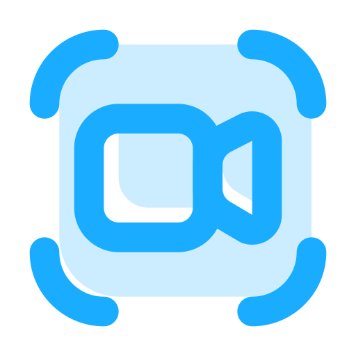

⏸

اسکرین رکوردر پیشرفته - Advanced Screen Recorder
00:00
کیفیت تصویر:
Low (720p)
Medium (1080p)
High (4K Crystal)
فرمت دانلود:
WebM (استاندارد)
MP4 (سازگار)
MKV (حرفهای)
ورودی صدا:
🔇 بدون ضبط صدا
فقط صدای سیستم
سیستم + میکروفون
تایمر توقف خودکار:
بینهایت
10 دقیقه
30 دقیقه
60 دقیقه
وضعیت وبکم:
خاموش
روشن
شکل وبکم:
مستطیل
مربع
دایره
Screen Recording 🔴 شروع ضبط صفحه
Stop Recording ❌ توقف ضبط
دانلود فایل ویدیو 📥 Download video file
شبکههای اجتماعی من:
Telegram
Instagram
Twitter (X)
☕ حمایت مالی (Donation)